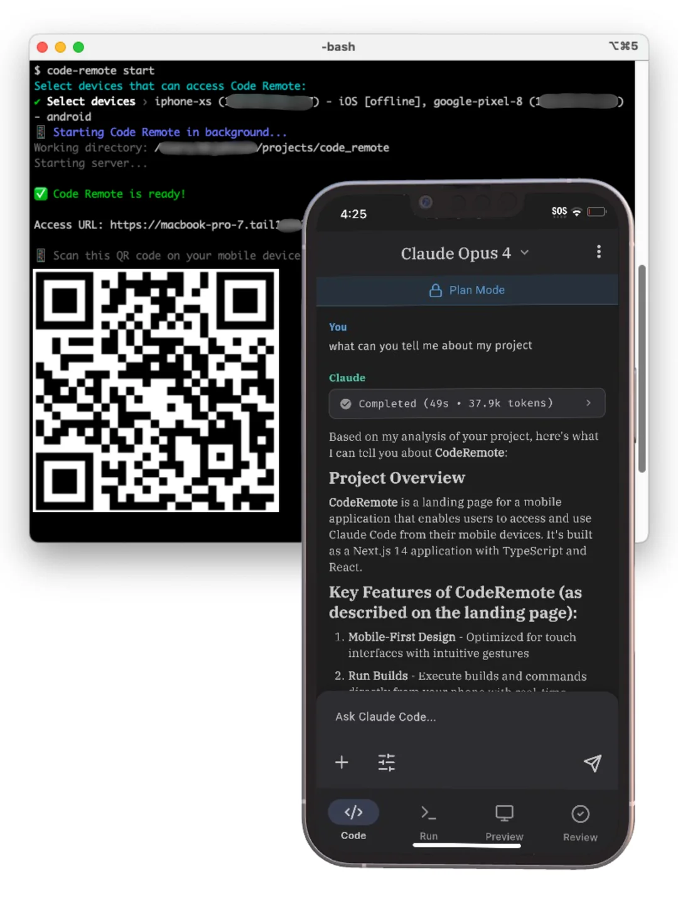
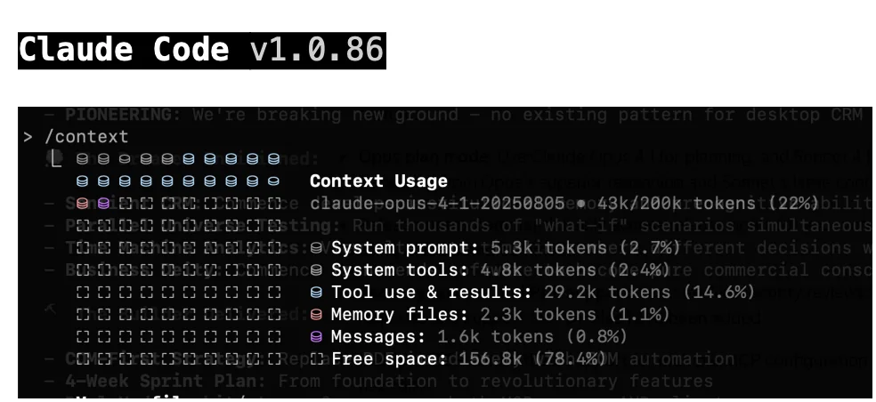

Section 1 -- Interfaces
Terminal (CLI) Core
The full-featured environment. Every feature is available here first. Install via bun or npm and run natively alongside your existing tools. IDE aware.

From installation to common workflows - everything our team needs to get started
| Claude Code | Chatbot | |
|---|---|---|
| Files | Edits directly | Copy-paste snippets |
| Commands | Runs tests | Describes what to run |
| Codebase | Full context | Paste-limited |
| Behavior | Agentic loop | Single turn |
| Git | Commit-ready | No VCS |
The full-featured environment. Every feature is available here first. Install via bun or npm and run natively alongside your existing tools. IDE aware.
Inline diffs and shared context right inside VS Code and JetBrains. See Claude's changes as diff hunks.



~/.claude/), project root, or subdirectoryCLAUDE.md files inside a projectThink of it as the onboarding doc you write for Claude. Everything you'd tell a new team member -- put it here.
~/.claude/settings.jsonYour global defaults -- applies to all projects on your machine
.claude/settings.jsonTeam standards, committed to repo -- shared across the team
.claude/settings.local.jsonYour machine overrides, .gitignored -- personal customization
Later levels override earlier ones. Project settings are version-controlled -- everyone on the team gets the same baseline.
Common settings: allowed tools, default model, API keys, MCP server configs.
/permissions -- allowlist specific tools Claude can use without asking| Level | Behavior |
|---|---|
| Allow | Auto-approve -- no prompt shown |
| Ask | Prompt before each use (default) |
| Deny | Block entirely -- tool unavailable |
Granular control: allow Bash(npm test) but deny Bash(rm -rf)
Permissions can be updated on demand -- no need to predefine them.
claude mcp add <name> <command>glab for example| Service | What it connects |
|---|---|
| GitHub / GitLab | PRs, issues, code search |
| Linear / Jira | Issue tracking, sprint data |
| Postgres / DBs | Schema queries, data lookups |
| Slack | Channel messages, notifications |
| Internal APIs | Custom business logic |
Configure in .mcp.json (project) or ~/.claude/mcp.json (global)
.claude/commands//command-name$ARGUMENTS/review, /deploy, /fix-lint.claude/skills/ providing passive expertise/skill-name when needed| Commands | |
|---|---|
| Trigger | User-triggered, explicit |
| Timing | Manual -- you control when |
| Best for | On-demand actions |
| Location | .claude/commands/ |
| Skills | |
|---|---|
| Trigger | Always-on, auto-discovered |
| Timing | Automatic -- applied by context |
| Best for | Passive expertise |
| Location | .claude/skills/ |
claude | Start a new session in current dir |
claude -c | Continue the most recent conversation |
claude -r <name> | Resume a named previous session |
claude -w [name] | Start in a new git worktree |
Sessions persist automatically. You can always come back to where you left off.
claude -p "..." | One-shot prompt, no interactive session |
cat logs | claude -p "explain" | Pipe stdin into Claude |
-p --output-format json | Machine-readable JSON output |
-p --allowedTools Bash Edit | Restrict tools in CI mode |
The -p flag transforms CC into a scriptable Unix tool. Use for CI/CD, cron jobs, log analysis, pre-commit checks.
Esc | Interrupt Claude mid-action to course-correct |
Esc Esc | Open the checkpoint / rewind menu |
/rewind | Undo mistakes -- restores both conversation and code state |
Claude snapshots state before every significant action. You can always roll back without touching git.
Use Shift-Tab to toggle plan mode before large changes -- you'll need /rewind far less often.
Visualize current token usage. Use proactively, not reactively.
Condenses history while preserving code patterns and key decisions. Use at 60-70% fill.
Completely resets context. Use between unrelated tasks. A fresh context is a sharp mind.

Ask Claude to explain the codebase. Build shared understanding first.
Generate a written strategy with /plan. Review and approve.
Claude executes against the plan. Steer with short corrections.
Stage changes, write commit message, draft PR description.
| Strategy | Instead of... | Try... |
|---|---|---|
| Scope the task | "add tests for foo.py" | "write a test for foo.py covering the edge case where user is logged out. avoid mocks." |
| Point to sources | "why does ExecutionFactory have a weird api?" | "look through ExecutionFactory's git history and summarize how its api came to be" |
| Reference patterns | "add a calendar widget" | "look at how widgets are implemented on the home page. HotDogWidget.php is a good example. Follow the pattern." |
| Describe symptoms | "fix the login bug" | "login fails after session timeout. check auth flow in src/auth/, especially token refresh. write a failing test, then fix it" |
For larger features, ask Claude to interview you about requirements, edge cases, and tradeoffs before coding. Then write a spec and implement in a fresh session.
/clear between tasks/clear + better promptClaude Code is the agentic harness around Claude: it provides tools, context management, and execution that turn a language model into a coding agent.
| Tool Category | What Claude can do |
|---|---|
| File ops | Read, edit, create, rename files |
| Search | Find files by pattern, regex content search |
| Execution | Shell commands, tests, git, builds |
| Web | Search web, fetch docs, look up errors |
| Code intel | Type errors, jump to def, find references |
Example: "fix the failing tests"
Run tests → read errors → search source files → read & understand code → edit to fix → run tests again to verify
The loop adapts to your task. You can interrupt at any point to steer. Each tool use feeds information back, informing the next step.
The more context and verification you provide upfront, the longer Claude can run autonomously without going off track.
code-agent Repo/review | Local or remote code review |
/mr | Create MR summary |
/smell | Find code smells (globally, entire code base) |
/tidy | Find and fix code smells (recent changes) |
/commit-message | Generate a commit message |
/update-changelog | Update docs/changelog.md |
/update-project-structure | Update project-structure.md |
git-commit -- conventional commit automationgitlab-ci-patterns -- CI/CD pipeline patternspython-standards -- coding standardsAGENTS.md is symlinked to CLAUDE.md but follows a wider industry standard that works across multiple AI coding tools, not just Claude Code. One file, multiple agents.
code-agent provides shared infrastructure (commands, skills, hooks). Projects add their own on top via npx skills add or claude plugin add. You get a common baseline without losing project-specific customization.
/hooks or edit .claude/settings.json directlyPreToolUse, PostToolUse, SessionStart, SessionEnd
prettier after every file editclaude plugin add <name>/pluginFor typed languages, install a code intelligence plugin to give Claude precise symbol navigation and automatic error detection after edits.
Publish internally for your team or via the public ecosystem. Great for standardizing workflows across an organization.
.claude/agents/ with custom tools, model, and prompt"Use subagents to investigate how our auth system handles token refresh" -- the subagent explores, reads files, and reports back without cluttering your context.
"Use a subagent to review this code for edge cases" -- a fresh context won't be biased toward code it just wrote.
claude -w [name] creates a new git worktree and starts a session in it--tmux to open each worktree in its own paneFor large migrations, loop through tasks calling claude -p for each file. Use --allowedTools to scope permissions for batch operations.
Desktop app manages multiple local sessions visually. claude.ai/code runs on Anthropic's cloud VMs. Agent teams coordinate multiple sessions with shared tasks.
--agents '{...}'claude agents/context, /compact, /clear